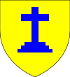

| Name | CoA | Founded | Origin | Men | Women | Head |
|---|---|---|---|---|---|---|
| Hornsea | | 1075-04-04 | Ancient | 1 | 1 | Osbert IX (23) |
| Crowborough | | 1169-08-13 | Morganatic | 3 | 4 | Constantine Crowborough (39) |
| Bognor | 1219-06-12 | Morganatic | 6 | 4 | Philip Bognor (49) | |
| Ancram |  | 1278-12-20 | Morganatic | 1 | 1 | Osmond Ancram (58) |
| Ashby | | 1337-06-01 | Morganatic | 8 | 4 | Osmond Ashby (41) |
| Bottesford | | 1368-02-24 | Posthumous | 1 | 2 | Ralph Bottesford (11) |
| Walthamstow | | 1371-04-01 | Morganatic | 4 | 3 | Richard Walthamstow (49) |
| Mitcheldean | | 1384-11-26 | Morganatic | 3 | 2 | Osmond Mitcheldean (30) |
| Corringham | | 1404-08-26 | Morganatic | 14 | 12 | Richard Corringham (44) |
| Ripley | 1404-08-26 | Morganatic | 9 | 6 | Osmond Ripley (31) | |
| Northumberland | 1409-06-10 | Morganatic | 8 | 2 | Letard Northumberland (45) | |
| Berwick | | 1413-02-16 | Humble | 2 | 4 | Fray Berwick (34) |
| Sandbach | 1433-07-14 | Humble | 4 | 3 | Michael Sandbach (22) | |
| Saxmundham | | 1436-04-25 | Morganatic | 3 | 4 | Solomon Saxmundham (61) |
| Diss | | 1458-06-21 | Morganatic | 2 | 7 | Constantine Diss (22) |
| Grange | 1458-06-21 | Morganatic | 1 | 4 | Michael Grange (45) | |
| Traquair | | 1461-10-25 | Morganatic | 1 | 1 | Osmond Traquair (16) |
| Didcot | 1461-10-25 | Morganatic | 21 | 17 | Osmond Didcot (60) | |
| Elland | | 1485-09-01 | Posthumous | 1 | 0 | Walter Elland (14) |
| Spalding | | 1491-10-09 | Morganatic | 2 | 1 | Richard Spalding (20) |
| Alfreton | 1494-03-07 | Morganatic | 2 | 0 | Philip Alfreton (8) | |
| TOTAL | N/A | 97 | 82 | |||